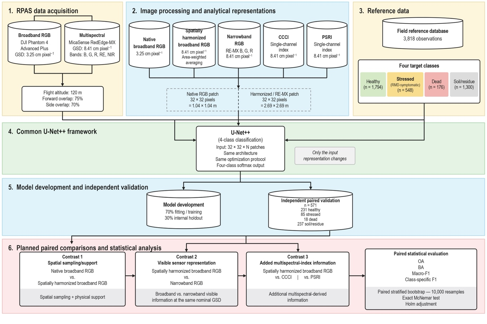

Reproduction guide¶
This site explains how to reproduce the experiment in
Spatial–spectral trade-offs in RPAS-based phytosanitary classification of Eucalyptus saligna — da Silva, Richter, Borges Junior, Amado, Amaral & Eugenio.
It does not summarise or discuss the paper. It covers what to run, in which order, with which parameters, and what outputs to expect, so you can rebuild every number in the paper's results tables from raw RPAS imagery and reference points.
The experiment in one paragraph
One U-Net++ patch classifier is trained separately on five image representations of the same stand. Each observation is a 32 × 32 pixel patch centred on a reference point and labelled with one of four classes: stressed (RMD), dead, healthy or soil/residue. Nothing changes between models except the input channels. All five models are scored on the same 571 validation observations, and each alternative is compared with spatially harmonized broadband RGB. The comparisons use paired, class-stratified bootstrap confidence intervals and exact McNemar tests with Holm correction.
What you will reproduce¶
| # | Representation | Source sensor | Channels | GSD (cm px⁻¹) | Patch footprint | Code folder |
|---|---|---|---|---|---|---|
| 1 | Broadband RGB — native | Phantom 4 Adv+ RGB camera | 3 | 3.25 | 1.04 × 1.04 m | linux/rgb_drone |
| 2 | Broadband RGB — harmonized (reference) | Phantom 4 Adv+ RGB camera | 3 | 8.41 | 2.69 × 2.69 m | linux/rgb_degradado |
| 3 | Narrowband RGB | MicaSense RedEdge-MX (B, G, R) | 3 | 8.41 | 2.69 × 2.69 m | linux/rgb_micasense |
| 4 | CCCI | MicaSense RedEdge-MX | 1 | 8.41 | 2.69 × 2.69 m | linux/IVs |
| 5 | PSRI | MicaSense RedEdge-MX | 1 | 8.41 | 2.69 × 2.69 m | linux/IVs |
The three pre-specified contrasts, each against harmonized RGB (#2):
- Spatial sampling/support: native RGB (#1) vs harmonized RGB (#2)
- Visible sensor representation at matched GSD: narrowband RGB (#3) vs harmonized RGB (#2)
- Added multispectral-index information: CCCI (#4) and PSRI (#5) vs harmonized RGB (#2)
End-to-end pipeline¶
flowchart LR
subgraph ACQ[Acquisition & photogrammetry]
A1[Phantom RGB images] --> A2[RGB orthomosaic<br/>3.25 cm]
B1[RedEdge-MX images] --> B2[5-band reflectance<br/>orthomosaic 8.41 cm]
end
subgraph REP[Representations]
A2 --> R1[1 Native RGB]
A2 -- area-weighted<br/>resampling to RE-MX grid --> R2[2 Harmonized RGB]
B2 -- B,G,R bands --> R3[3 Narrowband RGB]
B2 -- raster calculator --> R4[4 CCCI]
B2 -- raster calculator --> R5[5 PSRI]
end
P[Reference points<br/>train 3,818 / val 571] --> E
R1 & R2 & R3 & R4 & R5 --> E[32×32 patch<br/>extraction]
E --> T[U-Net++ training<br/>identical protocol]
T --> V[Predictions on the<br/>571 validation points]
V --> S[Paired statistics<br/>bootstrap + McNemar + Holm]
S --> O[Tables 3–4, Fig. 6–7]
Workflow of the comparison framework (paper, Fig. 5).
How this site is organised¶
-
Getting started Software environment, the input data you need, and a one-page run order.
-
Pipeline Nine steps from orthomosaics to the paired statistics, with the exact parameters and commands for each.
-
Reference Script catalogue, configuration keys, file formats, a Portuguese → English glossary and a list of every paper-vs-code difference with the patch that fixes it.
-
Extras Scripts in the repository that the paper does not use: RGB vegetation indices, wall-to-wall mapping and XAI.
Before you start: read Paper vs. code
The published method is the reference for this guide. A few details of the paper are not implemented in the scripts as delivered (stratified split for RGB, class oversampling, the 16-test Holm family). Each one is marked where it matters, and Paper vs. code collects them all with patches.
Quick check without any imagery
The five per-observation prediction files used in the paper are included in linux/comparacao/. Running the statistics script on them reproduces Tables 3 and 4 in a few minutes. See Expected results.